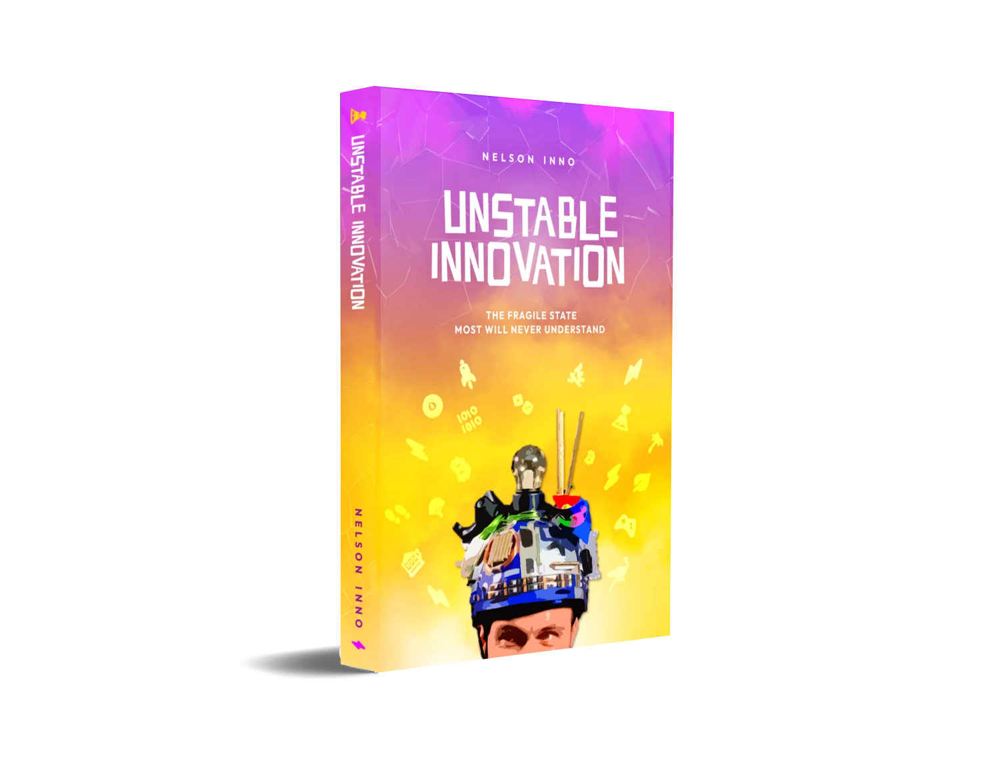

★★★★★
Explore and read with loved ones of all ages
The sooner the better. Then move on to the books he recommends. I recommend HIGHLY.
If you or your teenager loved The Alchemist, The 7 Habits of Highly Effective Teens or Atomic Habits, here is how Unstable Innovation compares. We are biased, of course, so we also say what each of those books does that ours does not try to do.
A short fable about a young shepherd who follows his dream across the desert.
In common: Both are about listening to that inner call and having the courage to follow it.
What Unstable Innovation adds: Unstable Innovation is nonfiction. Instead of a fable, you get real stories from a real entrepreneur and concrete ideas for acting on your calling in a fast-changing world.
Choose it instead if: you want a story to get lost in, more than ideas to act on.
A classic framework of habits, adapted for teenagers.
In common: Both push young readers to take responsibility for their own lives.
What Unstable Innovation adds: Unstable Innovation is not a step-by-step framework. It is about mindset, timing and the courage to build something. Together they work well: habits for the day to day, Unstable Innovation for the bigger question of what to build.
Choose it instead if: your teen needs a clear daily system and structure.
A practical guide to how small habits compound over time.
In common: Both agree that ordinary actions, repeated for a long time, lead to extraordinary results.
What Unstable Innovation adds: Unstable Innovation spends less time on the mechanics of habits and more on direction: which problem is worth your effort, and how to recognize your moment of truth.
Choose it instead if: you want a detailed, step-by-step system for building habits.
Stoic philosophy applied to turning obstacles into opportunities.
In common: Both draw on Stoicism and teach that we control our response, not the world.
What Unstable Innovation adds: Unstable Innovation applies that mindset to innovation: chaos, accelerating change, incentives and the megatrends of the next decade.
Choose it instead if: you want to go deeper into Stoicism itself.
The classic on communication and getting along with people.
In common: As a teenager, Nelson went to Dale Carnegie communication bootcamps, and the book is on his list of recommended reads.
What Unstable Innovation adds: Unstable Innovation covers communication as one skill among several, next to storytelling, visual thinking and business modeling, all in service of building something.
Choose it instead if: communication and relationships are the main thing you want to work on.
A founder's view on building startups that create something truly new.
In common: Both value contrarian ideas and being right when most people are wrong.
What Unstable Innovation adds: Unstable Innovation is not only for startup founders. It is written for teenagers, employees and builders alike, from a Latin American and European perspective.
Choose it instead if: you are already building a tech startup and want a founder's playbook of ideas.

The sooner the better. Then move on to the books he recommends. I recommend HIGHLY.
One of the friendliest books on innovation I have read lately. Very easy-reading, fast paced and entertaining. I love the combination of tools, intellectual insights, short anecdotes and a healthy dose of examples and cases.
This book was really thought-provoking and inspiring. After reading it, I feel more motivated to create value in the world.
Books with a similar spirit include The Alchemist by Paulo Coelho, The Obstacle Is the Way by Ryan Holiday, Atomic Habits by James Clear and Zero to One by Peter Thiel. For teenagers, The 7 Habits of Highly Effective Teens by Sean Covey is a good companion.
In spirit, yes: both are about following an inner call. But The Alchemist is a fable, and Unstable Innovation is nonfiction, with real stories and practical ideas for acting on that call.
Partly. It helps readers figure themselves out, but it is closer to a philosophy book disguised as an innovation and entrepreneurship book. It does not promise a recipe for success.
Nelson Inno and Adam Nili keep a list of 15 recommended books, from The Little Book of Stoicism to Thinking, Fast and Slow and The Rational Optimist.